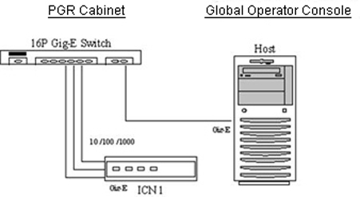

- 00000018WIA30209F20GYZ
- id_131057953.1
- Dec 7, 2022 4:48:40 PM
Host-ICN Ethernet Path
Disclaimer
Depending on your service agreement, not all service tools, diagnostics, and utilities referenced in this document may be accessible. Contact your sales person for information on available service license packages.
Diagnostic Description
Diagnostic Path
Diagnostics > System Function > Recon > VRE Communication Diagnostics
Diagnostics > Hardware Location > PGR Cabinet > Recon > VRE Communication Diagnostics
Purpose
The purpose of this diagnostic is to verify network connectivity between the host and an ICN. This diagnostic helps identify network failure points between a host and an ICN by sending an ICMP (ping) packet from the host to the ICN. The ICN is expected to acknowledge the packet by responding back to the host.
Components Tested
-
Host to VRE switch Ethernet cable
-
VRE switch to ICN Ethernet cable
-
VRE switch
Requirements
-
All Ethernet cables must be connected from the host to the VRE Ethernet switch.
-
All Ethernet cables must be connected from the ICN to the VRE Ethernet switch.
-
The ICN must be turned on.
Block Diagram

Test Sequence
-
Verify that all the Ethernet cables are connected.
-
Select Host-ICN Ethernet Path Diagnostic from the VRE Communication Diagnostics screen.
-
Click Run.
Note:After you click Run, do not click anywhere else in the Common Service Desktop until the test is complete. If you need to abort the test, click Stop.
-
Ensure that the ICN passes the diagnostic by reviewing the status in the Test Results table.
Expected Results
- Test Results
-
Diagnostic results display the test name with a status of PASS or FAIL. If you receive a FAIL status, click the error number in the 1st Error column to view error message details.
- Test Status
-
This window informs you of the progress of the test from the initial scan to the completed diagnostic.
Additional responses to the diagnostic failed result are outlined below:
| Result | Description | GE Field Action |
| Pass | The ICN passed the diagnostic. | No further action required. |
| Fail | The ICN failed the diagnostic. |
|
| No ICNs defined | Host has no ICNs defined. | See Configuring the ICN - VRE. |
Finalization
Before scanning, perform a TPS reset.